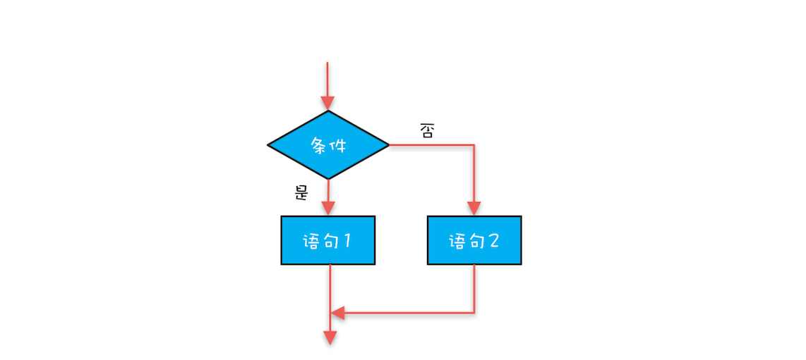
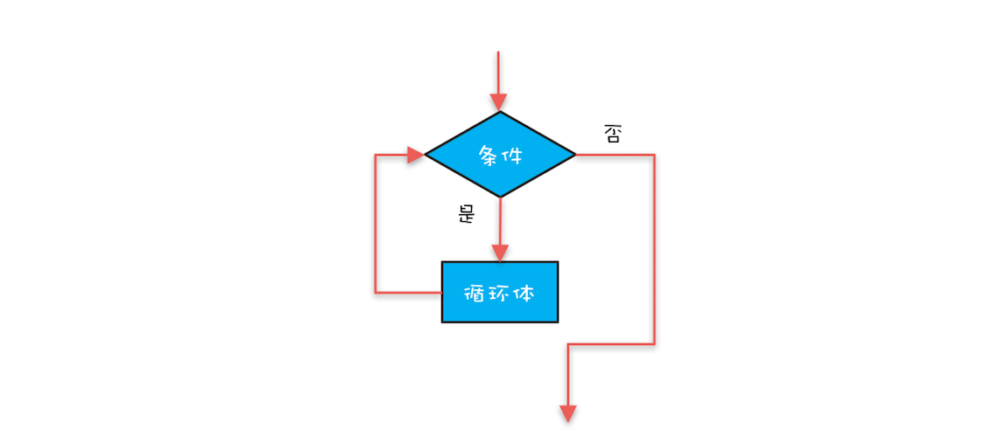
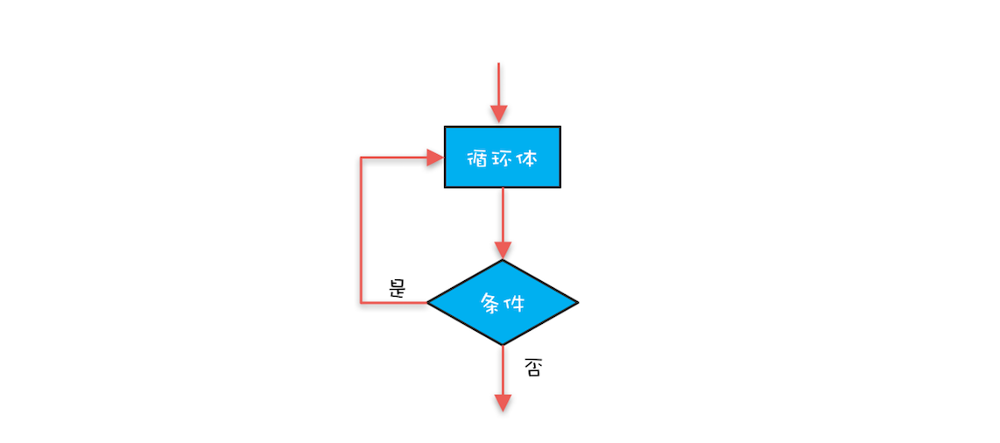

- 00 学习攻略 如何才能学好并发编程？.md
- 00 开篇词 你为什么需要学习并发编程？.md
- 01 可见性、原子性和有序性问题：并发编程Bug的源头.md
- 02 Java内存模型：看Java如何解决可见性和有序性问题.md
- 03 互斥锁（上）：解决原子性问题.md
- 04 互斥锁（下）：如何用一把锁保护多个资源？.md
- 05 一不小心就死锁了，怎么办？.md
- 06 用“等待-通知”机制优化循环等待.md
- 07 安全性、活跃性以及性能问题.md
- 08 管程：并发编程的万能钥匙.md
- 09 Java线程（上）：Java线程的生命周期.md
- 10 Java线程（中）：创建多少线程才是合适的？.md
- 11 Java线程（下）：为什么局部变量是线程安全的？.md
- 12 如何用面向对象思想写好并发程序？.md
- 13 理论基础模块热点问题答疑.md
- 14 Lock和Condition（上）：隐藏在并发包中的管程.md
- 15 Lock和Condition（下）：Dubbo如何用管程实现异步转同步？.md
- 16 Semaphore：如何快速实现一个限流器？.md
- 17 ReadWriteLock：如何快速实现一个完备的缓存？.md
- 18 StampedLock：有没有比读写锁更快的锁？.md
- 19 CountDownLatch和CyclicBarrier：如何让多线程步调一致？.md
- 20 并发容器：都有哪些“坑”需要我们填？.md
- 21 原子类：无锁工具类的典范.md
- 22 Executor与线程池：如何创建正确的线程池？.md
- 23 Future：如何用多线程实现最优的“烧水泡茶”程序？.md
- 24 CompletableFuture：异步编程没那么难.md
- 25 CompletionService：如何批量执行异步任务？.md
- 26 Fork_Join：单机版的MapReduce.md
- 27 并发工具类模块热点问题答疑.md
- 28 Immutability模式：如何利用不变性解决并发问题？.md
- 29 Copy-on-Write模式：不是延时策略的COW.md
- 3 个用户来信 打开一个新的并发世界.md
- 30 线程本地存储模式：没有共享，就没有伤害.md
- 31 Guarded Suspension模式：等待唤醒机制的规范实现.md
- 32 Balking模式：再谈线程安全的单例模式.md
- 33 Thread-Per-Message模式：最简单实用的分工方法.md
- 34 Worker Thread模式：如何避免重复创建线程？.md
- 35 两阶段终止模式：如何优雅地终止线程？.md
- 36 生产者-消费者模式：用流水线思想提高效率.md
- 37 设计模式模块热点问题答疑.md
- 38 案例分析（一）：高性能限流器Guava RateLimiter.md
- 39 案例分析（二）：高性能网络应用框架Netty.md
- 40 案例分析（三）：高性能队列Disruptor.md
- 41 案例分析（四）：高性能数据库连接池HiKariCP.md
- 42 Actor模型：面向对象原生的并发模型.md
- 43 软件事务内存：借鉴数据库的并发经验.md
- 44 协程：更轻量级的线程.md
- 45 CSP模型：Golang的主力队员.md
- 用户来信 真好，面试考到这些并发编程，我都答对了！.md
- 结束语 十年之后，初心依旧.md
44 协程：更轻量级的线程
Java语言里解决并发问题靠的是多线程，但线程是个重量级的对象，不能频繁创建、销毁，而且线程切换的成本也很高，为了解决这些问题，Java SDK提供了线程池。然而用好线程池并不容易，Java围绕线程池提供了很多工具类，这些工具类学起来也不容易。那有没有更好的解决方案呢？Java语言里目前还没有，但是其他语言里有，这个方案就是协程（Coroutine）。
我们可以把协程简单地理解为一种轻量级的线程。从操作系统的角度来看，线程是在内核态中调度的，而协程是在用户态调度的，所以相对于线程来说，协程切换的成本更低。协程虽然也有自己的栈，但是相比线程栈要小得多，典型的线程栈大小差不多有1M，而协程栈的大小往往只有几K或者几十K。所以，无论是从时间维度还是空间维度来看，协程都比线程轻量得多。
支持协程的语言还是挺多的，例如Golang、Python、Lua、Kotlin等都支持协程。下面我们就以Golang为代表，看看协程是如何在Golang中使用的。
Golang中的协程
在Golang中创建协程非常简单，在下面的示例代码中，要让hello()方法在一个新的协程中执行，只需要go hello("World") 这一行代码就搞定了。你可以对比着想想在Java里是如何“辛勤”地创建线程和线程池的吧，我的感觉一直都是：每次写完Golang的代码，就再也不想写Java代码了。
import (
"fmt"
"time"
)
func hello(msg string) {
fmt.Println("Hello " + msg)
}
func main() {
//在新的协程中执行hello方法
go hello("World")
fmt.Println("Run in main")
//等待100毫秒让协程执行结束
time.Sleep(100 * time.Millisecond)
}
我们在《33 | Thread-Per-Message模式：最简单实用的分工方法》中介绍过，利用协程能够很好地实现Thread-Per-Message模式。Thread-Per-Message模式非常简单，其实越是简单的模式，功能上就越稳定，可理解性也越好。
下面的示例代码是用Golang实现的echo程序的服务端，用的是Thread-Per-Message模式，为每个成功建立连接的socket分配一个协程，相比Java线程池的实现方案，Golang中协程的方案更简单。
import (
"log"
"net"
)
func main() {
//监听本地9090端口
socket, err := net.Listen("tcp", "127.0.0.1:9090")
if err != nil {
log.Panicln(err)
}
defer socket.Close()
for {
//处理连接请求
conn, err := socket.Accept()
if err != nil {
log.Panicln(err)
}
//处理已经成功建立连接的请求
go handleRequest(conn)
}
}
//处理已经成功建立连接的请求
func handleRequest(conn net.Conn) {
defer conn.Close()
for {
buf := make([]byte, 1024)
//读取请求数据
size, err := conn.Read(buf)
if err != nil {
return
}
//回写相应数据
conn.Write(buf[:size])
}
}
利用协程实现同步
其实协程并不仅限于实现Thread-Per-Message模式，它还可以将异步模式转换为同步模式。异步编程虽然近几年取得了长足发展，但是异步的思维模式对于普通人来讲毕竟是有难度的，只有线性的思维模式才是适合所有人的。而线性的思维模式反映到编程世界，就是同步。
在Java里使用多线程并发地处理I/O，基本上用的都是异步非阻塞模型，这种模型的异步主要是靠注册回调函数实现的，那能否都使用同步处理呢？显然是不能的。因为同步意味着等待，而线程等待，本质上就是一种严重的浪费。不过对于协程来说，等待的成本就没有那么高了，所以基于协程实现同步非阻塞是一个可行的方案。
OpenResty里实现的cosocket就是一种同步非阻塞方案，借助cosocket我们可以用线性的思维模式来编写非阻塞的程序。下面的示例代码是用cosocket实现的socket程序的客户端，建立连接、发送请求、读取响应所有的操作都是同步的，由于cosocket本身是非阻塞的，所以这些操作虽然是同步的，但是并不会阻塞。
-- 创建socket
local sock = ngx.socket.tcp()
-- 设置socket超时时间
sock:settimeouts(connect_timeout, send_timeout, read_timeout)
-- 连接到目标地址
local ok, err = sock:connect(host, port)
if not ok then
- -- 省略异常处理
end
-- 发送请求
local bytes, err = sock:send(request_data)
if not bytes then
-- 省略异常处理
end
-- 读取响应
local line, err = sock:receive()
if err then
-- 省略异常处理
end
-- 关闭socket
sock:close()
-- 处理读取到的数据line
handle(line)
结构化并发编程
Golang中的 go 语句让协程用起来太简单了，但是这种简单也蕴藏着风险。要深入了解这个风险是什么，就需要先了解一下 goto 语句的前世今生。
在我上学的时候，各种各样的编程语言书籍中都会谈到不建议使用 goto 语句，原因是 goto 语句会让程序变得混乱，当时对于这个问题我也没有多想，不建议用那就不用了。那为什么 goto 语句会让程序变得混乱呢？混乱具体指的又是什么呢？多年之后，我才了解到所谓的混乱指的是代码的书写顺序和执行顺序不一致。代码的书写顺序，代表的是我们的思维过程，如果思维的过程与代码执行的顺序不一致，那就会干扰我们对代码的理解。我们的思维是线性的，傻傻地一条道儿跑到黑，而goto语句太灵活，随时可以穿越时空，实在是太“混乱”了。
首先发现 goto 语句是“毒药”的人是著名的计算机科学家艾兹格·迪科斯彻（Edsger Dijkstra），同时他还提出了结构化程序设计。在结构化程序设计中，可以使用三种基本控制结构来代替goto，这三种基本的控制结构就是今天我们广泛使用的顺序结构、选择结构和循环结构。
顺序结构

选择结构

循环结构（while）

循环结构（do while）
这三种基本的控制结构奠定了今天高级语言的基础，如果仔细观察这三种结构，你会发现它们的入口和出口只有一个，这意味它们是可组合的，而且组合起来一定是线性的，整体来看，代码的书写顺序和执行顺序也是一致的。
我们以前写的并发程序，是否违背了结构化程序设计呢？这个问题以前并没有被关注，但是最近两年，随着并发编程的快速发展，已经开始有人关注了，而且剑指Golang中的 go 语句，指其为“毒药”，类比的是 goto 语句。详情可以参考相关的文章。
Golang中的 go 语句不过是快速创建协程的方法而已，这篇文章本质上并不仅仅在批判Golang中的 go 语句，而是在批判开启新的线程（或者协程）异步执行这种粗糙的做法，违背了结构化程序设计，Java语言其实也在其列。
当开启一个新的线程时，程序会并行地出现两个分支，主线程一个分支，子线程一个分支，这两个分支很多情况下都是天各一方、永不相见。而结构化的程序，可以有分支，但是最终一定要汇聚，不能有多个出口，因为只有这样它们组合起来才是线性的。
总结
最近几年支持协程的开发语言越来越多了，Java OpenSDK中Loom项目的目标就是支持协程，相信不久的将来，Java程序员也可以使用协程来解决并发问题了。
计算机里很多面向开发人员的技术，大多数都是在解决一个问题：易用性。协程作为一项并发编程技术，本质上也不过是解决并发工具的易用性问题而已。对于易用性，我觉得最重要的就是要适应我们的思维模式，在工作的前几年，我并没有怎么关注它，但是最近几年思维模式已成为我重点关注的对象。因为思维模式对工作的很多方面都会产生影响，例如质量。
一个软件产品是否能够活下去，从质量的角度看，最核心的就是代码写得好。那什么样的代码是好代码呢？我觉得，最根本的是可读性好。可读性好的代码，意味着大家都可以上手，而且上手后不会大动干戈。那如何让代码的可读性好呢？很简单，换位思考，用大众、普通的思维模式去写代码，而不是炫耀自己的各种设计能力。我觉得好的代码，就像人民的艺术一样，应该是为人民群众服务的，只有根植于广大群众之中，才有生命力。
欢迎在留言区与我分享你的想法，也欢迎你在留言区记录你的思考过程。感谢阅读，如果你觉得这篇文章对你有帮助的话，也欢迎把它分享给更多的朋友。
© 2019 - 2023 Liangliang Lee. Powered by gin and hexo-theme-book.